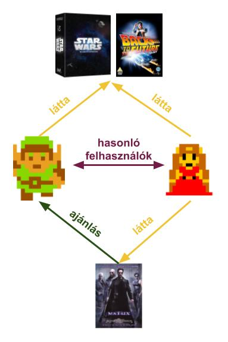
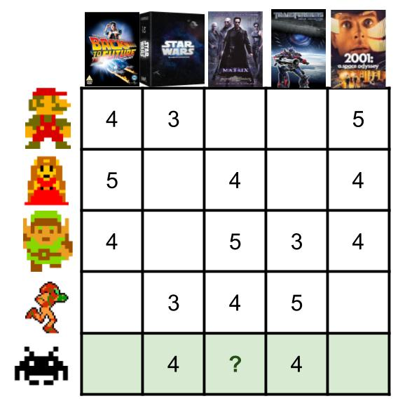
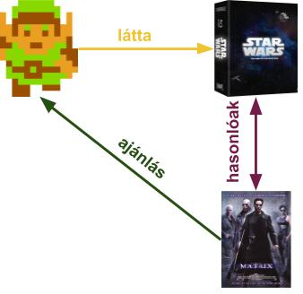
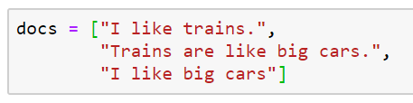
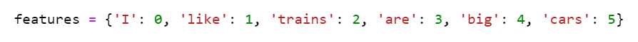
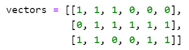
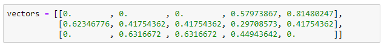

Mesterséges Intelligencia Esettanulmány:
A Lensa Match
Fülöp András / @fulibacsi
/whoami
Korábban
Most

Lensa
Kik ők?

Mit csinálnak?

Lensa.com Állásajánló portál
-
Felhasználóik felé:
- USA álláshirdetéseiből
- Feliratkozott felhasználóknak generált levél ajánlatokkal
- Az oldal látogatóinak azonnali ajánlás
-
Hirdetési partnereik felé:
- Hirdetési feedek fogadása, feldolgozása
- Feed-ekben található állások ajánlása
- Kattintás / regisztrálás után jutalék
Egy kis Lensa statisztika
Feladat
Áttekintés
- Állás feed-ek ellenőrzése, fogadása
- Állás feed-ek előfeldolgozása
- Állások ajánlása az előfeldolgozott feed-ekből
- Statisztikák és dokumentumok archiválása
Előfeldolgozás
-
Bemenet:
- többnyire strukturált XML
-
Kimenet:
- Vektorizált állások
- Index-elt dokumentumok
Ajánlás
-
Bemenet:
- Vektorizált állások
- Index-elt dokumentumok
- Felhasználói preferenciák
- Üzleti preferenciák
-
Kimenet:
- Ajánlott dokumentumok
- Ajánlási score-ok
Megoldás
Kellékek
- Ajánlórendszerek
Ajánlórendszerek

Kollaboratív filtering
Kollaboratív filtering
Tartalomalapú
Kellékek
- Ajánlórendszerek ✔
- NLP
NLP
NLP Eszközök
- Előfeldolgozás, transzformáció
- Szabályalapú egyértelműsítés
- Vektorizáció
Vektorizáció
Bag of Words
  Vektorizáció
Tf-Idf súlyozás
Kellékek
- Ajánlórendszerek ✔
- NLP ✔
Lensa Match
Match kezdetben

Megoldás ?
Megoldás ?2.0
Kellékek
- Ajánlórendszerek ✔
- NLP ✔
- Adatok ✔
- Távolságmetrikák
Távolságmetrikák
- Levenshtein távolság
- Cos távolság
- Együttes előfordulás
Kellékek
- Ajánlórendszerek ✔
- NLP ✔
- Adatok ✔
- Távolságmetrikák ✔
Match 2.0

Megoldás 2.0?
Megoldás ?5.0
Kellékek
- Ajánlórendszerek ✔
- NLP ✔
- Adatok ✔
- Távolságmetrikák ✔
- Deep learning
Deep Learning

Deep Learning

Word Embeddings


Kellékek
- Ajánlórendszerek ✔
- NLP ✔
- Adatok ✔
- Távolságmetrikák ✔
- Deep Learning ✔
Match 5.0

Megoldás ?✔
Kihívások
Zajos adatok
| több nyelv | → | minőségvizsgálat |
| duplikátumok | → | deduplikáció |
| "copy-paste" hirdetések | → | nem 1-1 dedup |
| hirdetés több helyszínen | → | geo alapú dedup |
| zajos pozíciók | → | pozíciónormalizálás |
| spam pozíciók | → | egyedi kivételek |
Sebesség
| számításigényes hasonlóságszámítás | → | komponensenkénti szűkítés |
| nagy adatátvitel | → | szűkített adatok küldése |
| típuskonverziók | → | típusok egységesítése |
| változó feedméretek | → | dinamikus skálázás |
Technológiai buktatók
- processzek menedzselése
- memória fregmentáció
Takeaway
Az adatok gyűjtését nem lehet elég korán kezdeni...
de nincsen adat kezdeti megoldás nélkül
Good enough is better than perfect...
de tartsuk nyitva a szemünket
Mindig van újabb és menőbb eszköz...
de attól még hogy van kalapácsunk, ne nézzünk mindent szögnek
Mindig az üzleti igény az első...
de ez nem jelenti azt, hogy nem kezdeményezhetünk
Köszönöm a figyelmet!
Fülöp András / @fulibacsi
datapao.com